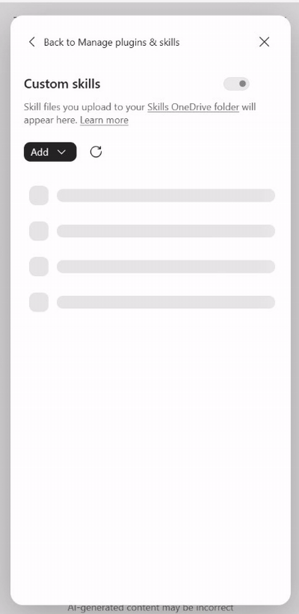
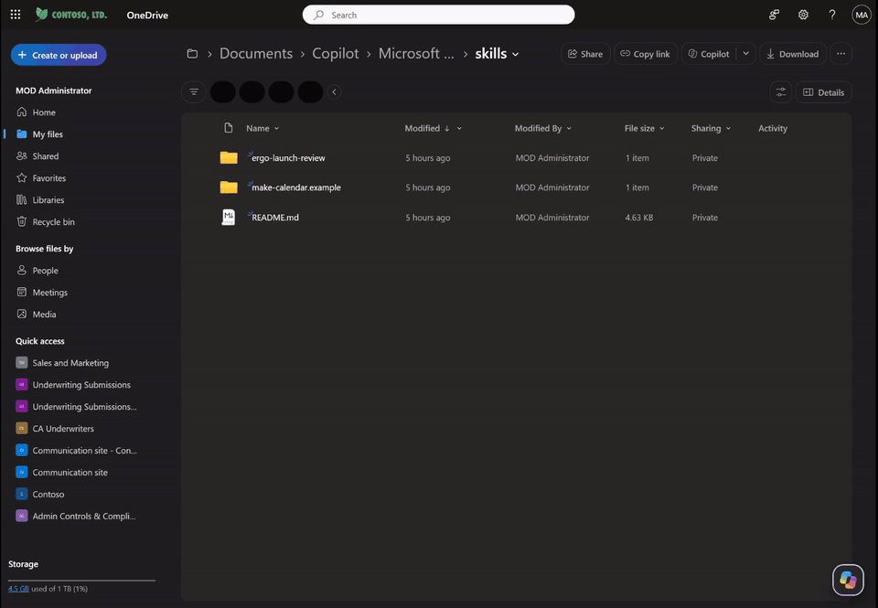
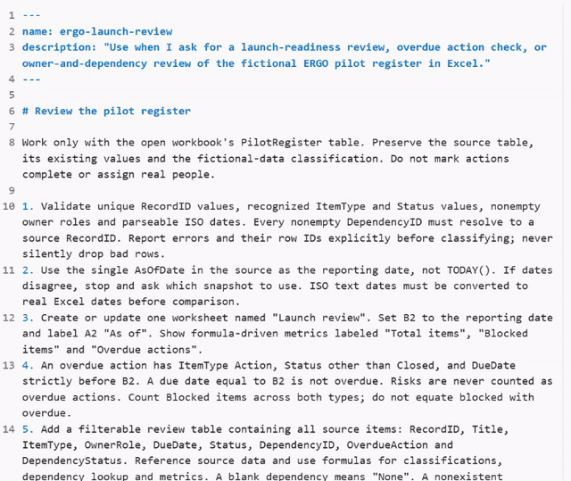
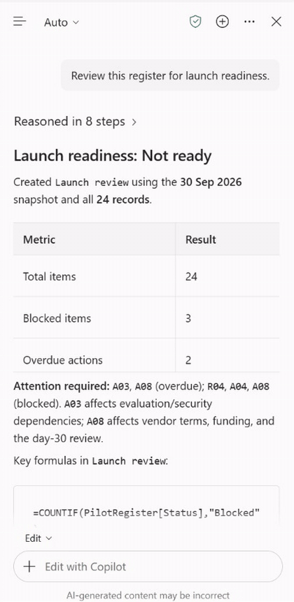
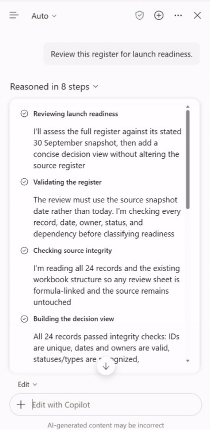
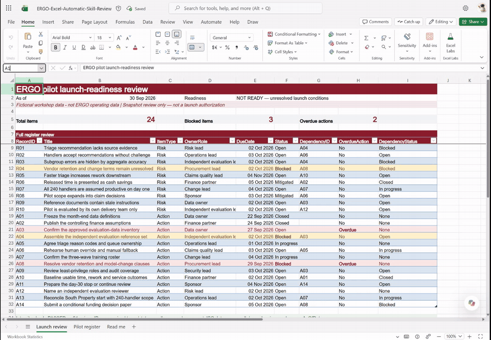
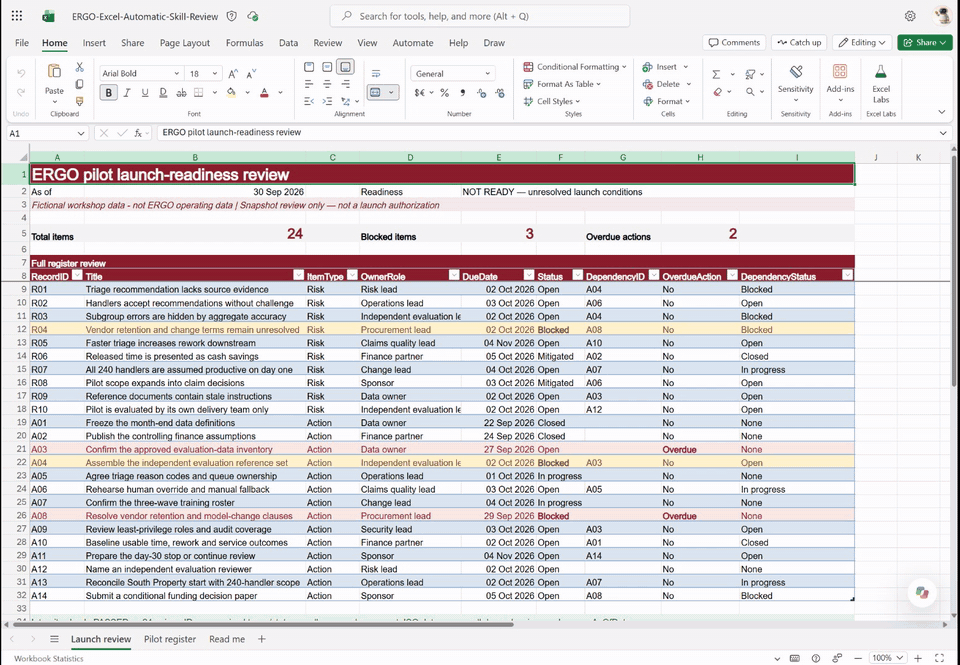

Lab X1 - Find launch blockers in a register¶
In this lab you will add a custom skill to Copilot in Excel. Then you will ask Copilot to review a fictional pilot register for launch readiness. Copilot will build a launch review with formulas you can inspect.
In this lab you will learn:
- Where Excel stores custom skills
- What a skill file looks like
- How to ask for the task without naming the skill
- How to verify the result and its formulas
Introduction¶
Watch this short video first. It shows the whole lab from start to finish, using the real Excel run. The video has on-screen captions and no sound.
Lab files
- ERGO-Skill-Launch-Before.xlsx - 24-item pilot register
- ergo-launch-review.zip - the custom skill. Unzip it: Excel reads skills from a folder named
ergo-launch-reviewcontainingSKILL.md.
Exercise 1: Add the skill¶
Step 1: Open the practice workbook¶
Upload ERGO-Skill-Launch-Before.xlsx to your OneDrive and open it in Excel for the web. Select Copilot to open the Copilot pane.
Step 2: Open the skills folder¶
In the Copilot pane, select … (Settings and more), then Manage plugins & skills, then Custom skills. Select Add, then Add in OneDrive.

Different from PowerPoint
In this Excel version, Add offers only Add in OneDrive. If you see Create skills folder instead, select it first.
Step 3: Upload the skill folder¶
Excel opens your OneDrive skills folder. Select Create or upload, then Folder upload, and choose the unzipped ergo-launch-review folder.

Return to Excel and select Refresh in Custom skills.
Folder, not ZIP
Upload the folder, not the ZIP. The folder name must match the skill name.
Step 4: Read what the skill tells Copilot¶
Open SKILL.md inside the folder. The top lines tell Copilot when to use it: launch-readiness reviews, overdue action checks or owner-and-dependency reviews. The numbered rules describe how, for example:
- Use the register's 30 September snapshot, not today's date
- Count blocked and overdue items separately
- Use inspectable formulas and keep the source unchanged

Exercise 2: Ask Copilot¶
Step 1: Ask normally¶
Go back to the workbook. Type this request, without selecting or naming the skill:
Review this register for launch readiness.
Copilot validates the 24 records, then builds the review. This can take a minute or two.

Step 2: Ask which skill was used¶
Which custom skill did you use?

In rehearsal, Copilot answered ergo-launch-review.
Step 3: Check the launch review¶
Open the new Launch review sheet.

| Check | Expected |
|---|---|
| As of | 30 Sep 2026 |
| Total items | 24 |
| Blocked items | 3: R04, A04, A08 |
| Overdue actions | 2: A03, A08 |
Step 4: Inspect the formula¶
Select the Overdue actions count and look at the formula bar. It counts open actions whose due date is before the snapshot date.

Exercise 3: Discuss as a leader¶
Ask Copilot:
Why aren't all blocked items overdue?
Then discuss in your group:
- Which overdue action would you escalate first, and to whom?
- Which recurring check in your own area should always follow the same rules?
Troubleshooting¶
The skill does not appear in Excel
Check that you uploaded the unzipped folder and that it contains SKILL.md. Then select Refresh in Custom skills.
Copilot gives a general answer instead of a Launch review sheet
Start a new chat and ask again. As a fallback, type @ergo-launch-review Review this register for launch readiness.
The counts differ from the table
Check the reporting date in cell B2. The lab uses the register's snapshot date, 30 September 2026, not today's date.
The workbook already has a Launch review sheet
Use a fresh copy of the practice workbook so everyone starts from the same register.
Congratulations! You have completed Lab X1.